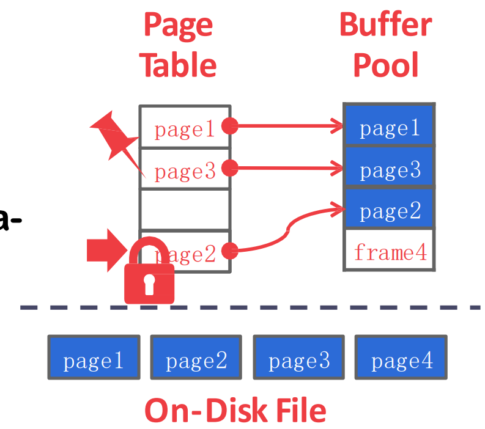
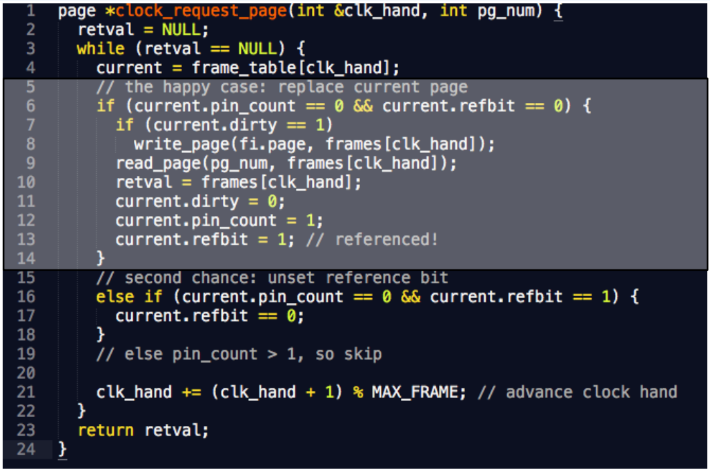
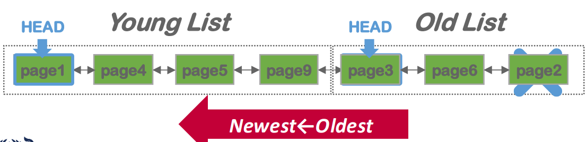

서울대학교 데이터사이언스대학원 정형수 교수님의 "데이터사이언스 응용을 위한 빅데이터 및 지식 관리 시스템" 강의를 필기한 내용입니다.
Architecture Revisit
- Disk manager 는 efficiency 보다는 correctness 에 초점이 맞춰져 있다
- 그 위의 buffer pool 은 caching 을 이용한 IO efficiency, index 는 tree/hash 를 이용한 search efficiency 를 고려한다.
- Storage 에서는 다음의 두 관점을 생각해야 한다:
- 어디에 어떻게 저장할까: spatial control
- 연관된 데이터를 인접하게 위치시켜서 필요한 데이터를 한번에 많이 가져오자 (batch load)
- sequential 이 random 보다 좋으니까 log-structure 를 사용하자 등
- 언제 데이터를 읽어오고 언제 방출할까: temporal control
- Disk 에서 가져오는 횟수를 최대한 줄이는게 목표
- 어디에 어떻게 저장할까: spatial control
Buffer Pool Manager

- 알다시피
- 위쪽에서는 buffer pool 에 page 를 요청하면
- Buffer Pool 에서는 있으면 주고 없으면 Disk manager 에게 물어봐서 가져와서 준다
- 근데 공간이 부족하기 때문에 누군가는 나가야 한다. 이것 (replacement) 이 buffer pool 의 핵심 topic 임
- page 를 담는 buffer pool 공간을 frame 이라고 한다.
- memory 에서와 동일하다고 생각하면 된다
- 당연히 이 공간은 array 이다
- 어느 frame 에 어떤 page 가 들어가있는지를 나타내는 table 을 page table 이라고 한다.
Concurrency consideration
- lock vs latch
- lock 과 latch 는 사실상 똑같은 것이긴 한데
- lock 은 transaction 의 ACID 를 위한 용어이기 때문에
- buffer pool 에서의 lock 은 latch 라고 부른다
- 즉, DBMS 에서의 자료구조에 대한 concurrency 를 위해 사용하는 lock 은 lock 이라고 부르지 않고 latch 라고 부른다.
- 각 page 에 RW latch 를 구비해서 page 가 가리키는 메모리 공간에 접근하는 것에 대한 concurrency 를 조절한다.
- 참고로) mutex 를 너무 많이 사용하면 특정 시점에 당연히 성능이 떨어질 수 있고 이걸 performance collapse 라고 한다.
Page table
- 뭐 page table 은 위에서 말한 것처럼 page id 와 frame id 를 매핑해서 현재 buffer 의 상태를 나타내는데 사용된다.
- 여기에는 page 를 관리하기 위한 metadata 도 저장한다: dirty bit (flush 여부 확인용), pin count (evict 가능한지 알기 위해)
- Page directory: 이놈은 page ID 와 file 에서의 page 위치를 mapping 해놓은 것
- 당연히 restart 시에 읽어들여야 하기 때문에 disk 에 저장된다.
- Page table: 이놈은 page ID 와 buffer 에서의 frame index 를 mapping 해놓은 것.
- 당연히 restart 시에는 buffer 에 남아있는게 없기 때문에 disk 에 저장하지 않는다 (in-memory).
Allocation policy
- Global policy: txn 범용적
- 즉, 살아있는 모든 txn 에 적용되는 정책
- Local policy: 특정 txn 에 국한된 것
- 가령 특정 txn 은 특정 frame 만 사용해야 한다는 등
Buffer pool optimization
Multiple buffer pool
- 보통은 buffer pool 의 개수를 config 가능하게 하고, 하나만 사용할 수 있게는 안한다.
- 이런 것을 resource partitioning 이라고 부르고, 이건 independency 를 늘려 parallelism 을 늘리고 결론적으로 load balancing 되게 하는 목적이다.
- 즉, buffer pool 의 개수를 늘려서 buffer management 의 load 를 줄이겠다는 것
- 그럼 어떤 page 를 어떤 buffer pool 에 저장할까?
- 방법1) 어느 buffer pool 에 담기는지 (이걸 object ID 라고 하더라) 를 page table 에 같이 저장하는 방법도 있을 수 있고
- 방법2) hashing 하기: hash collision 가 나는 애들을 하나의 buffer pool 로 관리하는 방법
- 다만 hash algorithm 이 잘못되면 hot page 들이 하나의 buffer pool 에 몰릴 수 있기 때문에 조심해야 한다.
Prefetch, Buffer pool bypass
- Prefetch 는 알다시피 spacial locality 가 있는 애들을 미리 갖고오는 것이다.
- 가령 index 에서 leaf 에 닿으면 그 이후의 page 여러개를 한꺼번에 갖고오는 등
- Buffer pool bypass 은 scan 시에 다른 txn 에 영향을 덜 주기 위해 buffer pool 을 사용하지 않는 방법이다.
- Scan 을 하는 경우 buffer pool 을 많이 차지하는데, 이때 다른 txn 에 피해주는 것을 줄이기 위해 buffer pool 을 사용하지 않고 그냥 txn worker thread 의 local memory 공간에 읽어들이는 방법이다.
- 뭐 피해주는 것도 있겠지만 LRU (CLOCK) 에서의 sequential flooding 문제도 있다.
- Light scan 이라고도 부른댄다.
Scan sharing
- Full scan 을 하려는 txn 여러개를 생각해 보자.
- 한놈이 scan 하면서 buffer 에 다 넣다가 공간이 부족해 지면 LRU 에 의해 가장 초반에 읽은 놈이 빠지는데
- 다른놈이 와서 읽을라고 하면 그 이미 빠진 “초반에 읽은 놈”이 필요해지기 때문에 다시 넣는 문제가 생김
- 이렇게 sequential read 하는 tx 들이 서로 자기꺼를 넣으려고 딴애들꺼를 빼는 것을 sequential flooding (홍수) 이라고 한다.
- 이때 이 새로운 tx 는 처음부터 읽게 하지 말고 지금까지 읽고 있던 그 흐름에 태워서 같이 읽게 하는 방법이 scan sharing 이다.
- 즉, piggybacking 이라고 할 수 있다.
- cursor sharing 이라고도 한다.
- 그리고 이 흐름에 올라탄 놈은 일단 따라가다가 업혀준 애가 끝나면 다시 처음으로 돌아가서 안읽은 부분을 읽게 된다.
- 근데 이게 항상 좋은 것은 아니다
- 왜냐면 tx 들 간의 연산 속도가 다르기 때문
- 어떤애는 무거운 연산을 하고 어떤애는 단순한 연산을 하고
- 근데 이들의 속도가 sync 되어 있기 때문에 오히려 성능이 낮아질 수 있다
- 또한 이 sync 하는 것 자체에 대한 overhead 가 있을 수 있다
- consensus overhead 라고 생각하면 된다
- 왜냐면 tx 들 간의 연산 속도가 다르기 때문
- 그래서 이 두 trade off 를 해결하기 위해
- Cloud DB 에서는 그냥 tx 별 private buffer pool 을 줘버리고
- 당연히 그래서 동일한 page 를 여러번 읽게 되는 단점이 있다
- Psql 에서는 sequential read 도중 threshold 를 넘으면 더이상의 buffer pool 을 사용하지 못하고 지금까지 사용한 만큼의 pool 만 반복적으로 사용할 수 있도록 제동을 걸어버린다
- 즉, 이렇게 하면 private buffer pool 과 비슷한 효과가 난다.
- 이 방법이 위에서 말한 allocate policy 중에 private 이라고 할 수 있을 듯.
- 이것을 ring buffer 라고 한다.
- Cloud DB 에서는 그냥 tx 별 private buffer pool 을 줘버리고
Disabling page cache
- OS page cache 는 보통 사용 안하고, direct IO (
O_DIRECT) 로 데이터를 읽어들인다고 한다.- 는데 MySQL 이랑 PostgreSQL 모두 이게 꺼져있던데?
Replacement Policy
- 3C: 세 가지의 cache miss type
- Cold miss: cache 에 아무것도 없을 때
- Capacity: 일반적으로 생각하는 replacement 에 의한 miss
- Conflict: CPU cache 에서는 set associativity 때문에 자리가 많이 있어도 특정 위치로 caching 되어야 하는 상황이 있다. 이런 경우를 conflict 라고 하더라
LRU, CLOCK
- Buffer Pool 에서의 LRU 는 bustub 에서 구현했던거 생각하면 되는데
- Pininng 되어 있으면 못뺌
- Unpin 하면 뺄 수 있고 이때의 timestamp 를 저장
- 뺄때는 timestamp 가 가장 먼놈을 뺌
- 참고로 LRU 에서는 가장 먼놈을 빼고, LRU-K 에서는 뒤에서 K 번째로 먼놈을 뺀다.
- 실제로는 LRU 말고 CLOCK 을 많이 사용한다고 한다.
- Buffer pool 이 커지면 min timestamp 찾는데 디지게 오래걸리기 때문
- 사용되면 ref bit 를 키고, clock counter 는 돌면서 이 ref bit 를 꺼주면서 만약 ref bit 가 이미 꺼져있으면 그놈을 죽이는것.
- 기억하자: Replace 되어 들어온놈도 ref bit 가 켜지고, pinning 도 된다.
- 즉, 한 주기동안만 사용됐는지 확인해서 그 주기에 사용안되면 빼는 방식이다.
- 즉, LRU 의 access time 을 approximate 하는 알고리즘이다.
- 여기서 ref bit 을 늘리는 variation 도 가능하다고 한다.
- Page table 에 접근할때마다 (buffer pool 에 요청이 올 때마다) clock handle 을 움직임
- 이렇게 스스로 clock 을 움직이는 것을 self clocking 이라고 한댄다.
- 아래는 PostgreSQL 의 CLOCK 구현이다.

- 사실 뭐 읽어보면 그리 어려울 것은 없다.
Sequential flooding
- 위에서도 말했지만 sequential flooding 은 LRU 를 사용하는데에 있어서 full scan 시에 방금 뺀 놈이 다시 들어오게 되는 상황이 반복되어 miss rate 가 100% 가 되는 것이다.
- Scan sharing 에서처럼 여러 txn 이 부딧치는 경우도 가능하고
- (여러번 들었겠지만) buffer 크기보다 조금 큰 working set 을 반복해서 scan 하는 상황도 sequential flooding 이라고 한다.
- 이때는 LRU 보다는 MRU 가 더 좋다.
- 이건 해보면 알 수 있다.
- 따라서 sequential scan 의 경우에는 이놈이 LRU cache 를 pollution 하지 못하게 별도의 private buffer 를 주는 방법도 있다.
LRU-K
- 이 문제를 해결하기 위해 마지막 K 번째의 access 를 이용해 evict 를 하는 LRU-K 가 소개되었다고 한다.

- 그리고 MySQL 에서는 이 LRU-K 를 approximate 한 알고리즘을 사용하는데 원리는 ARC 와 비슷하다:
- 하나의 LRU list 를 사용하는데 entrypoint 를 두개를 가진다.
- 하나는 처음 hit 시에 넣는 old list head 와
- 두번 이상 hit 되었을 때 들어가는 young list head 가 있음.
- 따라서 young list 는 temporal locality 가 지켜지는 공간이고, old list 는 spatial locality 가 지켜지는 공간이라고 할 수 있다.
- 만약에 scan 을 하는 경우 새로은 page 가 계속 들어올 테니까 이때는 old list 에서만 놀게 되고, temporal locality 공간을 침범하지 않아 cache pollution 을 하지 않는다.
Etc
- 뭐 PostgreSQL 에서 private buffer 느낌을 내주는 ring buffer 라던지
- 자주 사용되는 것을 알고 있는 page 우선순위를 높여서 빼지 못하게 하는거라던지 등의 방법들이 있다고 한다.
Dirty page
- 변경사항을 persistent 하게 하기 위해 변경이 되면 dirty bit 가 켜지고 그럼 이놈이 evict 될 때 write 된다
- 가끔씩 background worker 가 있어서 주기적으로 dirty page 들을 내리면서 dirty bit 를 꺼주는 것도 수행한다고 한다.
- 이때는 그럼 evict 시에 flush 를 안해도 되기 때문에 replace 가 빨라 query 성능이 좋아진다고 한다.